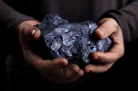
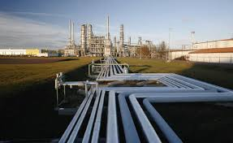

The world’s recent past has shown an unparalleled growth in wealth and health. While there are certainly poor people in poor nations who also suffer from poor health, nevertheless, considered across the world, our longevity and affluence is widely spread. While finding ways to spread that wealth and health more fully to all people is certainly an important Grand Challenge in itself, it is claimed here that the tremendous growth in the availability and use of energy is central to explaining past growth and achieving future improvement.
Humanity first started to exploit energy sources when fire was discovered. Plants, we found, and especially heavy, dense plants like trees, were perfectly suited for fire. We used it for warmth and for cooking. It also was used driving new technology, such as the refining of metals and shaping them for new uses.
 Coal is a rock-like substance that has been known throughout history. Its earliest use as a source of energy dates to about 1000 BC in China where it was being used to refine copper. A Greek report from the 3rd century BC mentions coal as “burning rocks”. There is some evidence of its use in Britain in the 3rd millennium BC in funeral pyres. Coal became the energy source driving the Industrial Revolution in Europe and America.
Petroleum has also been known from antiquity. Its use as an asphalt construction material is claimed for ancient Babylon. The Chinese have been using it as a fuel source since 1000 BC and perhaps even earlier. These all came from surface deposits. Hand dug wells, using bamboo as a drill, were developed throughout Asia from the 3rd century AD onward.
Not until the mid-19th century did the idea of refining crude oil into its many components start to take hold. Kerosene became the first important product that was used in lanterns for lighting. This drove the development of the oil industry. Many wells had been discovered, but the first commercial oil well was developed in 1858 in Ontario, Canada where a rich reserve was discovered just 4 metres below the surface.
Connected with the extraction of both coal and oil is the release of gas phase fuels. Natural gas has become an important energy source. It too is a fossil fuel but as a gas its distribution to consumers is different than it is for coal (a solid) or oil (a liquid).
Combustion is the common method by which all of these materials release energy. This was crucial to fuel the growth in health and wealth during the past centuries, but now we are concerned about the ramifications of running out of some of these fuel sources (the fossil fuels) and the implications that their combustion has for climate change.
Hydropower is another ancient source of energy. As water naturally falls under the influence of gravity, its kinetic energy has been used to turn water wheels and has been used to grind wheat or saw timber or stone. Some records suggest such uses as early as the 4th century BC in India. To increase the usefulness of this power source, dams are constructed to hold vast quantities of water at an elevated height. This is stored energy. Today, hydropower is almost exclusively hydroelectric power; the hydropower is converted into electrical power for distribution and utilization.
power is increasing in popularity. Its simplest implementation is just using the heat of the sun to warm water. Commonly now, however, the phrase refers to photovoltaic devices that directly convert sunlight into electrical energy. By contrast, there are some commercial power plants that use a field of mirrors to focus sunlight to a central spot and use it to boil water to drive turbines and produce electrical power.
Wind power is also an old power source. Sailing vessels have been powered by the wind for millennia. Windmills used the wind to grind grains. They have been used to pump water out of deep wells. Now they dot the landscape to directly produce electrical power.
Ocean tides have also been harnessed to generate power. Even in Roman times, capturing high tide waters in dams and then using their outflow to drive mills had been developed. In modern times they have been used to generate electricity. The largest tidal power plant is in South Korea which can generate 254 MW of electrical power.
Nuclear power has been harnessed comparatively recently for energy production. Certain radioactive elements (commonly uranium-235) can be induced to undergo chain reactions in a reactor core, and produce copious amounts of heat in a controlled fashion. This heat can be used to boil water which in turn is used to turn turbines and produce electrical energy.
Biofuels are derived directly from a biological source. Chopping down trees or collecting cow dung for fuel are still important energy sources in third world countries. But when we discuss biofuels, we generally are thinking of a sustainable process that is intentionally engineered to produce fuel. Ethanol from corn fermentation or harvesting algae pools for oils to produce diesel fuel are some successful examples. While coal and oil are, in one sense also bio-derived fuels, they also require millions of years through geological processes to be formed and are considered separately.
When we speak of energy, we commonly think in terms of heat and electricity, as we have outlined above. Another aspect of importance to each of us is the energy we use to power ourselves. At its most fundamental, the energy that we derive from eating and breathing is chemically related to the energy of combustion of fossil fuels. An important chemical aspect of energy is the biological conversion of food into energy: keeping us warm, helping us work, enabling us to think.